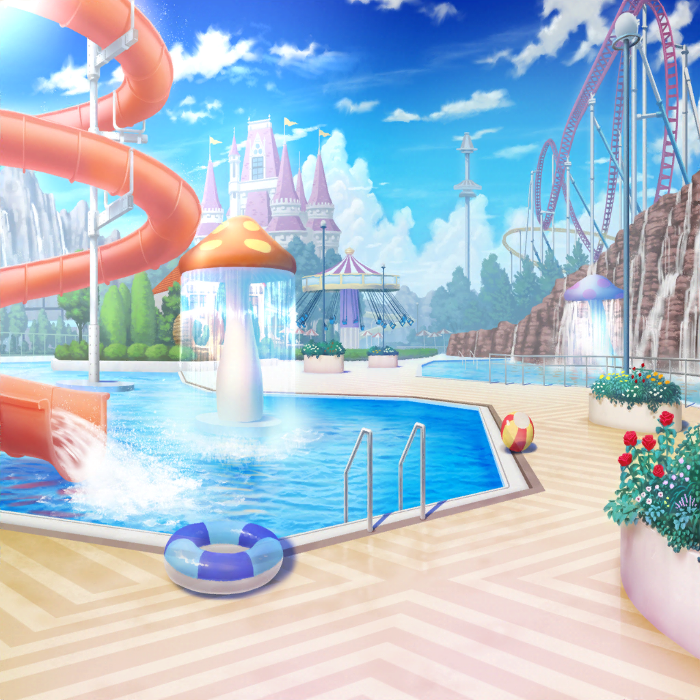

トコナッツパーク
リサ
ごめんねー、紗夜。
飲み物買いに行くの手伝ってもらっちゃって
紗夜
私も喉が渇いていたし構わないわ。
それに一人じゃ五人分の飲み物を持ちきれないでしょう
リサ
あはは……言われてみればそうかも。
ていうか、紗夜ってクールに見えて、結構優しいよねー
紗夜
別に普通だと思うけど。
買い出しを手伝ったくらいで大げさよ
リサ
いやいやー。
困ってる人に自然と手を差し伸べるなんて
なかなかできることじゃないよー
紗夜
……そんなに褒めても何も出ないわよ
リサ
照れない照れない。
それにしても、人が多くなってきたねー。
さすが、人気のテーマパークなだけあるわー
紗夜
そうね……ん？ あれは……
リサ
ちょ、ちょっとちょっと、どこ行くのー？
女の子
ぐすっ……うう……おかあさぁん……
紗夜
どうかしましたか？
どこか具合が悪いなら救護室に……
女の子
ひぅ……う、うう……
うわあぁぁぁぁぁぁぁぁんっ！
紗夜
えっ……あ、あの……
リサ
どうしたのー？ よしよし、大丈夫だよー。
お母さんとはぐれちゃったのかな？
女の子
えぐっ、うっ……うん……遊んでたら、
おかあさんいなくなって……それで……あぅ、ううっ……
リサ
そっかそっか。泣かないで、もう大丈夫だからねー。
きっとお母さんも探してるよ。パークの人にお願いして、
ここにいるよーって、お母さん呼んでもらおうか
女の子
うん……
リサ
よし、決まり！ それじゃ行こっか！
ね、今日はどんなことして遊んでたの？
お姉さんに教えて欲しいなー？
女の子
えーっと……
あっちに、おおきなすべりだいがあってね……
紗夜
すごい……あんなに泣いていたのに……
10分後
女の子
おねえちゃんたち、ありがとー！
ばいばーい！
リサ
うん、ばいばーい！
今度ははぐれないようにねー
紗夜
親御さんがすぐに見つかってよかったわね
リサ
本当だよー。せっかく楽しい思い出を作りに来たのに、
寂しい記憶だけが残ったらかわいそうだもんねー
紗夜
……さっきは、私も助かったわ。
声をかけたとたんに泣かれてしまって、
どうしたらいいのかわからなくなってしまったから……
リサ
ああいう時はね、まず目線を合わせてあげるといいんだよ。
そうするだけで、安心して、話を聞いてくれるんだ
紗夜
なるほど……大人に見下ろされていたら、
余計に怖いと感じてしまうものね……勉強になるわ
リサ
あはは、そんな大げさなことでもないけど。
まあ、子供の相手は慣れてるから
紗夜
そうなの？
リサ
昔から近所の年下の子と遊んだりしてると、
自然と面倒を見る係になってたからねー
リサ
まあ、アタシもそういうの嫌いじゃないし。
気がつけば慣れちゃってたかな
紗夜
今井さんは昔から面倒見がよかったのね
紗夜
そんな今井さんだからこそ、
あの子も泣き止んでくれたのだと思うわ
紗夜
私も面倒見の良さを見習わないといけないかもしれないわね
リサ
なに言ってんの、紗夜も面倒見いいってば！
だって、こんなに人が多い中、
泣いてるあの子を見つけて、声をかけたんだから
紗夜
結局は、泣かせてしまったけど……
リサ
でも、最後までちゃんと付き添って、
お母さんに会わせてあげたじゃん！
リサ
アタシがいなくても、紗夜はそうしてたと思うよ。
違う？
紗夜
それは……だって、放っておけないじゃない
リサ
ほら、やっぱり。
それが面倒見がいいってことだよ
紗夜
…………
リサ
あはは、照れない照れない☆
リサ
……っと、友希那から連絡来てる。
飲み物はまだ？ って、ヤバイっ！
アタシら買い出しの途中だった！
紗夜
い、急ぎましょう！